Troubleshooting and Performance
Something I’ve parroted (more than a few times) is the phrase – “First get the Calculation to work, then get it to work faster!”
Both parts of that statement can be equally challenging, and I’m not sure which one I have spent more time on. There is no more helpless a feeling than when a Calculation won’t work, and you have tried every solution you can think of to no avail. Your author has spent many hours banging his head against the wall, crying to the heavens for some divine intervention to provide guidance for Calculation issues. Then, there is the completely different – but equally excruciating – pain of trying to troubleshoot a Calculation or Consolidation that produces the correct results, but which the customer complains is taking way too long.
Hopefully, some of my pain and suffering can be of benefit to you. In this chapter, I will divulge some of the best troubleshooting techniques for both getting your Calculations to work – and work fast – as well as explain some common Calculation errors and how to optimize your Calculations for performance. Some of this chapter will be a rehash of the concepts already discussed but should serve as a good refresher.
Troubleshooting and Performance
Troubleshooting
Another phrase that rings true is “Coding is 5% writing the actual code, and 95% testing and troubleshooting.” I can probably count on one hand the number of times I’ve written a Calculation and it executed with the correct results on the first try. Troubleshooting is a skill unto itself and, like anything else, takes practice to master. Understanding the tools available and some common errors will give you a big head start.
Troubleshooting and Performance › Troubleshooting
Task Activity
Before you can start troubleshooting, you’ll need to know whether your Calculation or Consolidation completed successfully and – if it failed – why. Task Activity provides this information, and can be accessed either from the top-right menu in the desktop app or from the System tab.
Figure 7.1
…or…
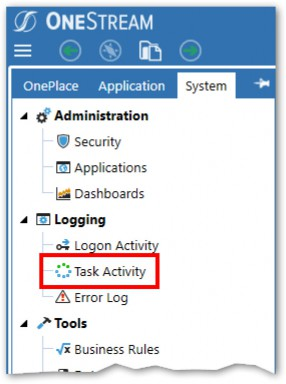
Figure 7.2
The Task Activity table shows the status of all OneStream-related server tasks and can be filtered by Task Type.
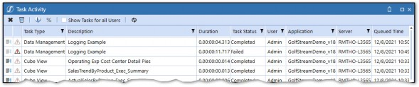
Figure 7.3
For any tasks that have encountered errors, detailed error information is available.
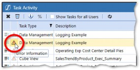
Figure 7.4
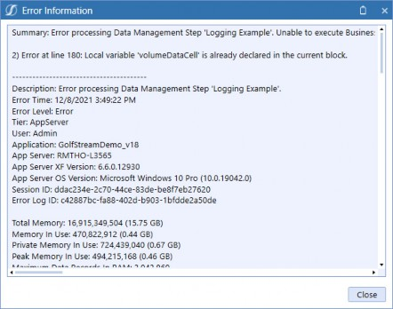
Figure 7.5
Task Activity is a great starting point but should an error be encountered, it won’t lead you very far down the road of solving it. Other techniques will need to be deployed – let’s continue!
Troubleshooting and Performance › Troubleshooting
Logging
Logging is perhaps the best tool in the bag for a coder. Coding without logging is like trying to land a plane blind. Logging will allow you to gain insight into what is happening between clicking Execute Calculation and the task completing by letting you log your own messages into the Error Log. For example, you may have declared a variable to pull a Member name. If that Member name doesn’t exist, then it will likely result in an error, causing the entire Calculation to fail. By logging that variable, you will easily be able to see the root cause of the error.
OneStream has a built-in Error Log, which can be accessed in the System tab.
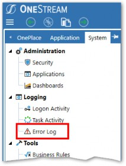
Figure 7.6
The Error Log contains the following information about the error:
Description
Error Time
Error Level
User
Application
(Server) Tier
App Server
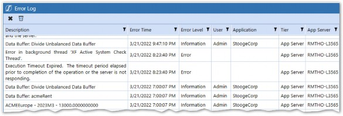
Figure 7.7
The Error Log table is a repository for all errors that occur within OneStream, not just Calculations, so use the filters at the top to find the relevant error.
Troubleshooting and Performance › Troubleshooting › Logging
Writing to the Error Log
Errors that occur during Calculation execution will automatically hit the Error Log. If you want to log your own messages within Calculation Scripts, the Error Log can manually be written to – via API or BRAPI calls.
api.LogMessage– available in Finance Business RulesBRApi.ErrorLog.LogMessage– available in all rules
Note: Using the API function instead of the BRAPI equivalent generally performs better, so make sure to use the api.LogMessage for all Finance Business Rules. |
Troubleshooting and Performance › Troubleshooting › Logging › Writing to the Error Log
Log a String
The api.LogMessage function will allow you to log any string value to the Error Log table.
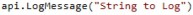
Upon execution of the Calculation, the string will appear in the Error Log table.
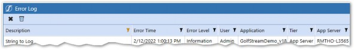
Figure 7.8
By default, Information will show as the Error Level. This can be changed by adding the Error Level argument to the function.
IntelliSense will show the various options available for the XFErrorLevel argument.
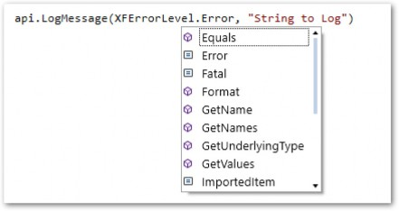
Figure 7.9
Troubleshooting and Performance › Troubleshooting › Logging › Writing to the Error Log
Log a Decimal
The LogMessage function will only allow the logging of strings, so anything logged using that function must either be a string or be converted to a string. Many objects can be easily converted to a string using the ToString or XFToString Method. The XFToString Method should be used when available as it is culture invariant.
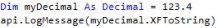
Troubleshooting and Performance › Troubleshooting › Logging
Logging Lists
Lists will not easily convert to a list, so other techniques can be used:
Troubleshooting and Performance › Troubleshooting › Logging › Logging Lists
String.Join
Below is an example of how to log a list of strings using the String.Join function with the vbnewline keyword:
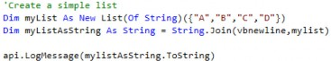
The list is logged in the Error Log, with each item appearing on a new line for readability.
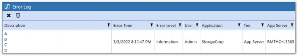
Figure 7.10
Lists of other objects, such as Members, can also be logged using VB.NET Functions.
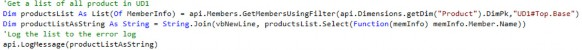
In the above example, the Member name was logged, but other properties of the Member could have been logged instead.
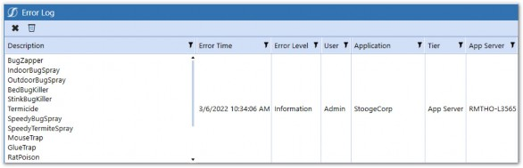
Figure 7.11
Troubleshooting and Performance › Troubleshooting › Logging › Logging Lists
For, Each
Lists can also be logged using a For Each loop. The above script loops through a list of
MemberInfo objects and then logs the Member names.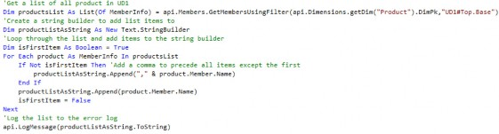
Troubleshooting and Performance The Member names are displayed in the Error Log, separated by a comma.
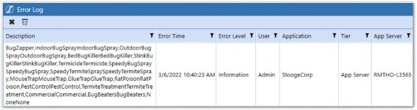
Figure 7.12
| Note: Be careful when logging lists with a For Each loop when there is a chance of the list containing a high volume of items. This can potentially consume a lot of memory and cause server issues. |
Troubleshooting and Performance › Troubleshooting › Logging
Log Data Buffer
For Data Buffers, we can use the LogDataBuffer function originally introduced in Chapter 2.
First, declare a Data Buffer using the api.Data.GetDataBufferUsingFormula function. Reference the LogDataBuffer subfunction by appending .LogDataBuffer to the Data Buffer variable.
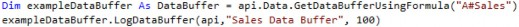
The LogDataBuffer function requires you to pass in the API, a string for the name, and an integer for the maximum number of cells. I usually pick 100 for the max number of cells, as anything more is not readable and could overload the server.
The output will appear in the Error Log and show Data Buffer information, as well as all of the data cells within the Buffer.
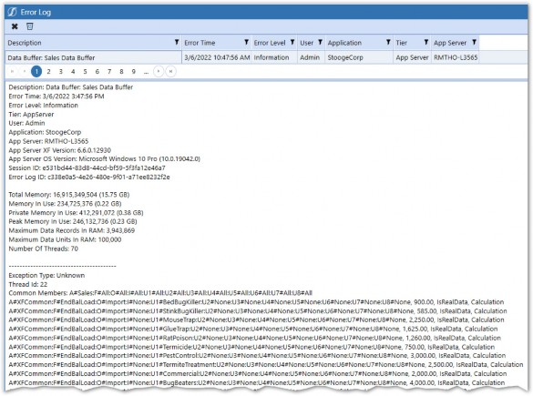
Figure 7.13
If you’re getting unexpected (or no) Calculation results, the LogDataBuffer function is extremely helpful. You can log each Data Buffer in your api.Data.Calculate function and analyze the data cells within to see where Dimensions aren’t matching up.
Troubleshooting and Performance › Troubleshooting
Stopwatch
For longer Calculations, with complex logic, Calculation drill down will only go so far in giving the necessary visibility into what’s happening. Using the VB.NET Stopwatch function can be very useful in identifying which part of your code is taking the longest to process.
To use the VB.NET Stopwatch function, first add the Diagnostics Library to your Business Rule header.
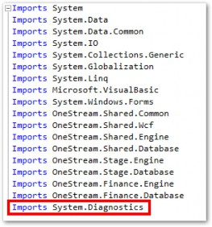
Figure 7.14
Create a new Stopwatch instance by using the StartNew function.
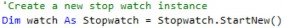
After some code logic, log the elapsed time by using the Elapsed function.
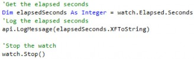
The below script shows all the functions used together to time a Member List loop.
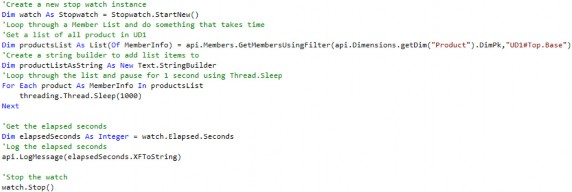
Troubleshooting and Performance › Troubleshooting
Rubber Duck Debugging
A popular troubleshooting method, known in the coding world as Rubber Duck Debugging, is a simple yet highly effective way of solving a coding issue when all other options have been exhausted.
Rubber Duck Debugging refers to a method of troubleshooting where you articulate your problem to an inanimate object such as a rubber duck. The idea is that by explaining what your code is doing – step by step – you will hit upon the solution in the process. This method is similar to trying to teach a complex subject back to someone in order to gain a deeper understanding. The change in perspective allows you to step back from the problem and analyze it differently.
Figure 7.15
As stupid as it sounds, your author employs this method quite often. There have been many times I have picked up an inanimate object (or telephoned a colleague) and, in the midst of explaining the problem, discovered the answer. When you’re out of options, this method is always worth a shot!
Troubleshooting and Performance › Troubleshooting
Calculation Performance Troubleshooting
Once you get all your Calculations working with expected results, you may find that they are running slower than what is deemed acceptable by the customer. There are several tools available to help troubleshoot performance issues.
Troubleshooting and Performance › Troubleshooting › Calculation Performance Troubleshooting
Calculation Drill Down
There will likely be dozens, if not hundreds, of Calculations that run during the Data Unit Calculation Sequence. If a Calculation of a Data Unit is running unusually slowly, then finding the culprit can be a daunting task, akin to finding a needle in a haystack.
Luckily, the Calculation drill down tool is available to help pinpoint the exact Calculation(s) causing the issue.
Troubleshooting and Performance › Troubleshooting › Calculation Performance Troubleshooting › Calculation Drill Down
Calculate with Logging
To enable functionality to drill down to Calculation details, Consolidate or Calculate With Logging must be run.
From Data Management:
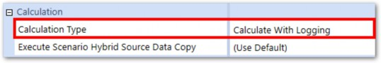
Figure 7.16
Troubleshooting and Performance From a Cube View, a Force Consolidate With Logging is run on ACMEGroup:
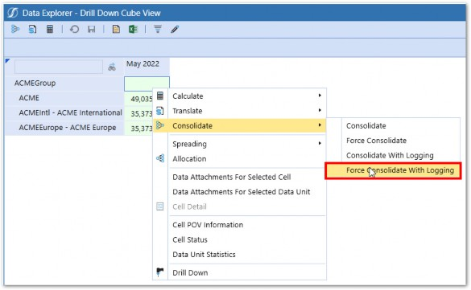
Figure 7.17
Troubleshooting and Performance › Troubleshooting › Calculation Performance Troubleshooting › Calculation Drill Down › Calculate with Logging
Viewing the Result
Once the Calculation with logging finishes, you can view the results by clicking Child Steps in the
Task Activity.
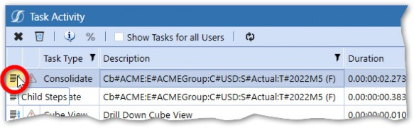
Figure 7.18
Each Child step can be drilled into further, showing details for each step of the DUCS along with the duration. After drilling into ACMEGroup in 2022M5, all the dependent Data Units are shown.
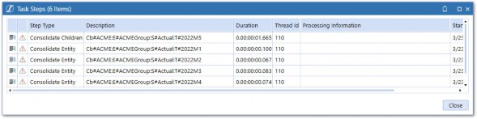
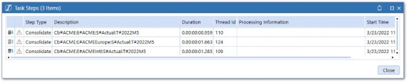
Figure 7.19
Each of the Child steps can be drilled into further to see each Consolidation Member that was processed.
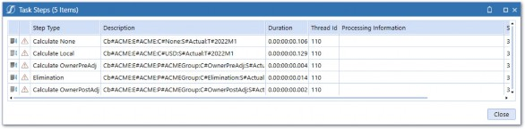
Figure 7.20
Since all our Calculations run on C#Local, we will drill into Calculate Local.
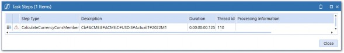
Figure 7.21 Next, we drill into the CalculateCurrencyConsMember.
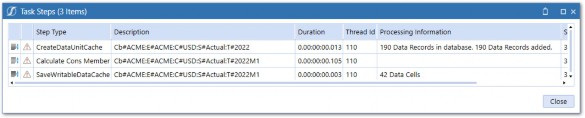
Figure 7.22
Before going further, notice the CreateDataUnitCache step, which will give us some visibility into the number of data records that are brought into cache (memory). This number is exactly what is referred to when talking about Data Unit Size.
The CalculateConsMember step will give us a breakdown of each step of the DUCS that was performed on this Data Unit.
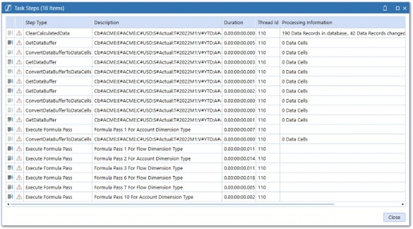
Figure 7.23
Next, individual Formula Passes and Business Rules can be drilled into.
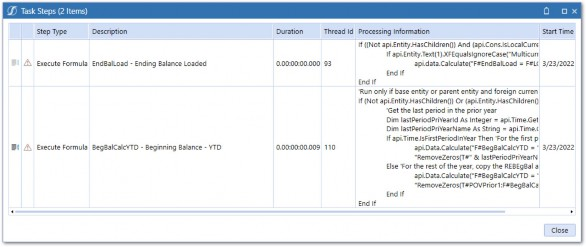
Figure 7.24 Finally, we can drill into the individual formulas.
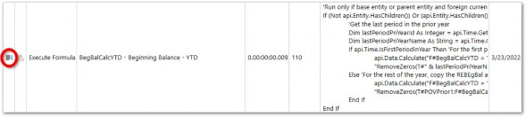
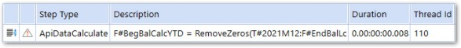
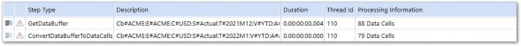
Figure 7.25
We can actually see the detailed breakdown of steps that the api.Data.Calculate function takes to derive the calculated data. Pretty cool, right?
This level of visibility into what the Calculation Engine is doing is a crucial tool to have in the bag for troubleshooting Calculations.
| Note: Calculation drill down is only available for Calculations that run inside the Data Unit Calculation Sequence. Individual functions within custom Calculations can be analyzed in isolation using Data Management. Also, be aware that running a Calculate or Consolidate With Logging adds significant processing time. |
Troubleshooting and Performance › Troubleshooting › Calculation Performance Troubleshooting
Common Calculation Errors
If your Calculation isn’t working, it’s likely due to one of two things. Either your Calculation resulted in an error and thus didn’t complete, or your Calculation successfully completed but produced incorrect (or no) results. As anybody who has used any software before knows, some error messages are more helpful than others, so knowing the most common errors and how to solve them will save you hours of time.
Troubleshooting and Performance › Troubleshooting › Calculation Performance Troubleshooting › Common Calculation Errors
Calculation Not Producing Results
Probably the most frustrating situation is when your Calculation is seemingly working as designed, running without errors, but the result data is not correct. For these situations, there is usually a data inconsistency that requires you to fix the underlying data (e.g., by remapping or adjusting your Calculation formula).
The best technique to tackle these situations is to use a combination of a Cube View and the LogDataBuffer function to obtain visibility into the data. A Cube View can be used to view the source and result intersections side by side, and leverage the drill down functionality. Let’s look at an example:
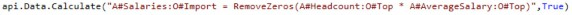
The above formula is very simple, but it isn’t producing the expected results. The first thing to do is set up a Cube View and confirm that there is data in both the Headcount and Average Salary Accounts.
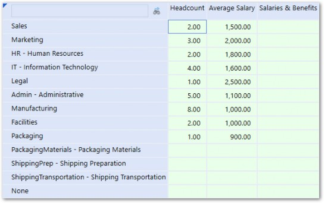
Figure 7.26
We can see that data exists for both of our inputs, yet we still don’t see the desired output in the Salaries & Benefits Account. Further investigation is required.
From here, we can drill into the underlying data in two ways:
Drill down into the Headcount and Average Salary data from the Cube View.
Log each of the respective Data Buffers in the Calculation.
Troubleshooting and Performance › Troubleshooting › Calculation Performance Troubleshooting › Common Calculation Errors › Calculation Not Producing Results
Drill Down From the Cube View
We can drill down into any cell by right-clicking and selecting Drill Down to access the Drill Down menu.
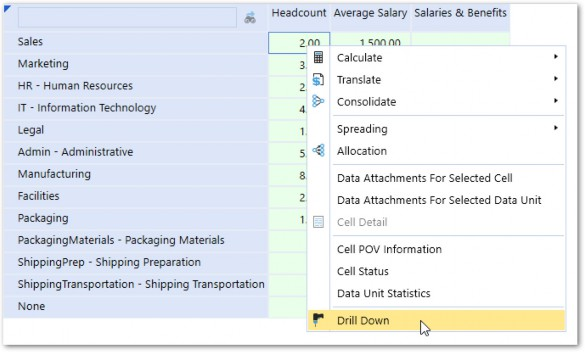
Figure 7.27
From the Drill Down menu, the data cell can be further drilled into. All Aggregated Data Below Cell will show us any Base-level data below the cell.
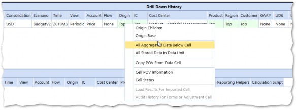
Figure 7.28
We can now see the POV detail for the Base-level data used in the Calculation.
Figure 7.29
Troubleshooting and Performance We will also do this for the Average Salary data for the same Cost Center.
Figure 7.30
After comparing the dimensionality between the two data cells, you can see the data for the two Accounts are at different Flow Dimensions.
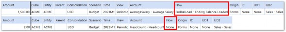
Figure 7.31
Troubleshooting and Performance › Troubleshooting › Calculation Performance Troubleshooting › Common Calculation Errors › Calculation Not Producing Results
Log the Data Buffers
As an alternative to the Cube View Drill Method, we can add Data Buffer logging to our Calculation Script, run the Calculation again, and compare the results of each in the Error Log.
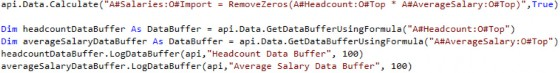
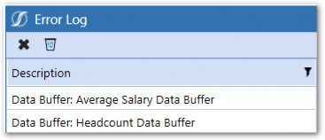
Figure 7.32
Average Salary Data Buffer:
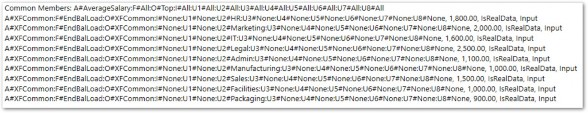
Figure 7.33
Headcount Data Buffer:
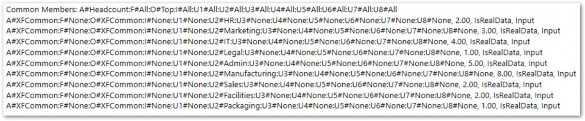
Figure 7.34
We can also see the mismatch in the Flow Member by comparing the Headcount and Average Salary Data Buffers above.
Troubleshooting and Performance › Troubleshooting › Calculation Performance Troubleshooting › Common Calculation Errors › Calculation Not Producing Results
Fixing the Issue
Remember, from earlier in the book, that when Data Buffer math occurs, only the data cells with matching dimensionality are processed. In our case, the two Data Buffers do not have any matching cells due to the difference in the Flow Dimension.
Now that we’ve located the issue, there are a few ways to solve it:
Fix the underlying data if it was inputted or mapped from a file incorrectly.
Adjust the Member Scripts in the formula to include the Flow Dimension so that the Flow is part of Common Members in the Data Buffer.
If the data is deemed to be correct, then adjusting the Member Script is the only option. The formula can be rewritten as below:
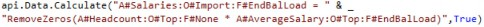
Logging the new Data Buffers will show that the Flow Dimension has moved to the Common Members part of both Data Buffers.
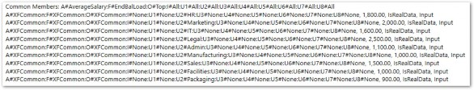
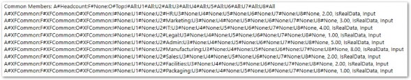
Figure 7.35
Data Buffer math now works, and we can see the correct results.
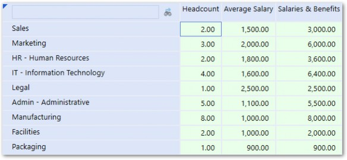
Figure 7.36
Troubleshooting and Performance › Troubleshooting › Calculation Performance Troubleshooting › Common Calculation Errors
Calculation Producing Inconsistent or No Results
A Calculation runs once, and you see the right number. After calculating a second time, the number changes. A third time, it produces the right number again. Around and around you go. Or maybe you check and verify that your data is correct, and yet a Calculation still produces no results. This behavior is usually a symptom of an issue with Formula Passes.
If a formula has a dependency on other calculated data, then that data needs to be calculated in a Formula Pass or Business Rule that executes earlier in the Data Unit Calculation Sequence. If two formulas are executing on the same Formula Pass within the same Dimension and have a dependency, inconsistent results will occur since each Formula Pass is multi-threaded. This means that one might execute before the other in one Calculation instance, and vice-versa on another.
A good tip to isolate whether you have a Formula Pass issue – when seeing inconsistent or no results – is to change the formula to run on Formula Pass 16, which is the last pass in the sequence. This will ensure that all other Calculations run before it does. If the Calculation produces correct and consistent results, you have found the issue. From there, you’ll need to do some further investigation to isolate which formula is on the wrong pass.
Tracking Calculation dependencies should be done early in the Calculation design phase using the dependency column in the Calculation Matrix introduced in the previous chapter.
Troubleshooting and Performance › Troubleshooting › Calculation Performance Troubleshooting › Common Calculation Errors
Compilation Error
Compilation errors occur when there is a mistake or typo in the syntax in your code. OneStream compiles all Business Rule code at runtime, but you can run a compile check within the Business Rule editor to check your code before execution.
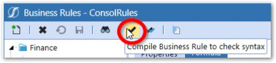
Figure 7.37
If a compilation error occurs, the message will give you some helpful information, such as the line on which the error occurred and the reason for the error.
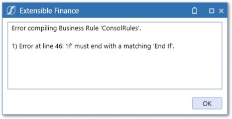
Figure 7.38
To resolve the error, simply fix the syntax and compile again until the Rule compiles successfully.
Troubleshooting and Performance › Troubleshooting › Calculation Performance Troubleshooting › Common Calculation Errors
Invalid Formula Script
Compilation errors won’t catch errors within the formula string of functions, such as api.Data.Calculate or api.Data.GetDataBufferUsingFormula. Those will be thrown as runtime errors.
Troubleshooting and Performance › Troubleshooting › Calculation Performance Troubleshooting › Common Calculation Errors › Invalid Formula Script
Invalid Member Name
The above formula string contains a typo – A#Priec should be A#Price. When the Calculation is executed, it will fail.
Figure 7.39
The error can be viewed by clicking the Error icon or by navigating to Task Activity and viewing it there.
Figure 7.40
The error shows that there was an invalid script due to there being no Priec Member in the Account Dimension. To correct this, simply fix the typo.
Troubleshooting and Performance › Troubleshooting › Calculation Performance Troubleshooting › Common Calculation Errors › Invalid Formula Script
Unclosed Parentheses
When you have a formula that requires a lot of parentheses, it can be menacing to try to match up all the opening and closing parentheses.
An untrained eye may not notice that a parenthesis is missing after U1#None. When executing the formula, the below error will be thrown.
Figure 7.41
Troubleshooting and Performance › Troubleshooting › Calculation Performance Troubleshooting › Common Calculation Errors
Unbalanced Buffer
As discussed in Chapter 3, Data Buffer math can only be performed on Data Buffers that have the same Common Members.
The above formula will result in an error.
Figure 7.42
The error can be resolved by using the Unbalanced Functions explained in Chapter 3.
Troubleshooting and Performance › Troubleshooting › Calculation Performance Troubleshooting › Common Calculation Errors
Declaring New Result Cell Outside of Loop
When using the Data Buffer Cell Loop, the new result cell should be declared within the loop.
It seems logical to declare the new result cell outside of the loop – to save processing time – but this will result in only the first cell being added to the Result Data Buffer.
Troubleshooting and Performance › Troubleshooting › Calculation Performance Troubleshooting › Common Calculation Errors
Duplicate Members in Filter
When using Dimension filters in the api.Data.Calculate function, a filter that contains duplicate Members will result in an error.
The above formula contains a filter with duplicate Members. U1#CourseMgt is a Base Member of U1#Services, so would be included twice when OneStream resolves the filter to a Dictionary object.
Figure 7.43
When executing the Calculation, the following error message will be shown:
Figure 7.44
OneStream converts the Member Filter into a Dictionary with a unique Key Value pair for each Member in the filter. Since Dictionaries cannot contain duplicate items, the error results.
Troubleshooting and Performance › Troubleshooting › Calculation Performance Troubleshooting › Common Calculation Errors
Undefined Members
When using the Data Buffer Cell Loop Method, all Dimensions in the Result Data Buffer must be set. If not explicitly defined, all Data Buffer cells will be set to a default for each Dimension (#None for Account, Flow, and UDs, and #Import for Origin).
Figure 7.45
In the above script, DestinationInfo is blank and the result cell does not inherit the properties of the source cell, which means no Dimensions are defined for the result cell. When we log the Result Data Buffer, we can see all of the Dimensions are set to defaults.
Figure 7.46
While this will not cause an error, it can cause unexpected results as data will be written to None Members, which is likely not the desired result.
This can be resolved by using the DestinationInfo object or by explicitly defining the result cells to set the resulting Data Buffer Dimensions.
Troubleshooting and Performance › Troubleshooting › Calculation Performance Troubleshooting › Common Calculation Errors
Unresolved Members
As we learned in Chapter 4, each Data Buffer Cell can be set to a Member by either inheriting the information from the source cell or by explicitly setting the Data Buffer cell’s MemberIds equal to an existing MemberId. If the MemberId is set to XFCommon (inherited from the source cell) or inadvertently set to an invalid Member, an error will occur.
Figure 7.47
The above example results in an error because common Members were unresolved in the Result Data Buffer.
Figure 7.48
When declaring the result cell inside the loop, the properties of the source cell were inherited.
The Source Data Buffer has Account in its Common Members, so that is what is inherited in the result cell. Without explicitly setting the Account to the result cell, or defining it in the DestinationInfo, XFCommon will be used. We can see the logged Result Data Buffer below:
Figure 7.49
This means that the common Members are unresolved and the error is thrown. To resolve it, the Account can be defined in the DestinationInfo or by explicitly setting the result cell.
This error can also occur if the result cell is set to an invalid Member.
The above example attempts to set the result cell Account to the Sales Account; however, it is done incorrectly as the GetMemberId function accepts the Member name only (without the A# Dimension tag). The result is that the Account Dimension is left off the Data Buffer cell.
Figure 7.50
Troubleshooting and Performance › Troubleshooting › Calculation Performance Troubleshooting › Common Calculation Errors
Invalid Destination Script
The Destination Member Script (the part of the formula to the left of the equal sign) in an api.Data.Calculate function should only contain Account-level Dimensions.
Adding Data Unit Dimensions to the destination script will result in an error.
Figure 7.51
The Data Unit information is provided to the Calculation at runtime and is not included in the Data Buffer. Additionally, data can only be written to the current Data Unit being processed.
To filter a Calculation to only process for certain Data Units (Entity in this case), refer to the Data Unit Dimensions in preceding If statements.
Troubleshooting and Performance › Troubleshooting › Calculation Performance Troubleshooting › Common Calculation Errors
Object Not Set to Instance of an Object
This error is particularly frustrating due to its vagueness.
Figure 7.52
This error generally means that an argument in one of your functions did not resolve to a value.
The above script passes arguments into the GetMembersUsingFilter function. The DimPk argument has been declared but not set. When the GetMembersUsingFilter gets processed, the ‘Object reference not set…’ error will be thrown.
Defining the UD1DimPk variable will resolve the error. In this simple example, the culprit for the error is easy to find. If the error is encountered for a rule that is longer and more complex, it can be much more difficult to find the function causing it. Using the logging function, plus some good old trial and error will be your go-to tools.
One last note. Often, a compilation will tip you off – before an error is encountered – with a warning that a variable has not been set to a value before it is used. Pay attention to compilation warnings.
Figure 7.53
Troubleshooting and Performance › Troubleshooting › Calculation Performance Troubleshooting › Common Calculation Errors
Given Key Not Present in Dictionary
When using Custom Calculate functions, parameters can be passed in via Name Value Pairs.
If the parameters are not defined in the Data Management Step, in which the Custom Calculate function is called, then an error will occur.
Figure 7.54
Figure 7.55
There are several things to consider here. First, using XFGetValue to retrieve the parameter value will allow us to set a default value if the parameter value cannot be found.
In this case, we will use a default value of an empty string. As is, the rule will still result in an error because U1 will not be defined in the ADC function. We will add some logic to check the parameter value so that the api.Data.Calculate function does not execute if the parameter is blank.
Finally, to fix the root cause of the error, we must define the parameter in the Data Management step.
Figure 7.56
One last thing is to make sure to add a comment to the rule that notes the parameter definition.
Troubleshooting and Performance
Calculation Performance
Performance boils down to speed, period. While its definition is clear, how it is measured and what it is measured against is not. Typically, it is measured by the time between when the ‘Execute Calc’ button is clicked to when the results are available to view. Acceptable performance can mean different things to different customers. Even within a single company, it can mean different things to different Users!
It’s important to set benchmarks and expectations upfront. Benchmarks can be derived from legacy systems, but it’s important to remember that it may not always be an apples-to-apples comparison as more data and functionality is typically present in OneStream. At the end of the day, it is always better to under-promise and over-deliver than the alternative, so set expectations accordingly.
Troubleshooting and Performance › Calculation Performance
Overview
When it comes to Calculation and Consolidation performance within an application, there are a number of things that can affect performance:
Hardware and Server Settings
Cube Design
Formula Efficiency
Troubleshooting and Performance › Calculation Performance › Overview
A Note on Multi-threading
Before we move further, let’s make sure we understand a key feature within the OneStream Calculation Engine. As the OneStream Finance Engine processes Consolidations or Calculations, it multi-threads sibling Data Units. In other words, OneStream tries to process multiple Data Units at the same time when possible.
For example, all Base Entities could theoretically be processed at the same time during a Consolidation. You may have noticed that Consolidations usually reach >90% relatively quickly, and then the last 10% drags. Since the percentage is based on the number of Data Units processed – compared to the total – and multi-threading increases at the lower levels, it makes sense that this dynamic occurs.
The multi-threading concept will be mentioned often in the following settings, so it’s important to understand exactly what it refers to.
Troubleshooting and Performance › Calculation Performance
Hardware and Server Settings
When trying to speed up Calculations or Consolidations, the first idea people have is to increase the hardware specs. If you want your car to go faster, get a bigger engine with more horsepower, right? It’s important that hardware is right-sized for the requirements of your application, but increasing hardware is no replacement for well-written Calculations. In fact, hardware increases provide linear performance increases at best, while code optimization often provides an exponential performance increase.
This section will highlight much of what was discussed in Chapter 14 of the OneStream Foundation Handbook. I strongly suggest referencing that book for more details on performance tuning for Calculations, as well as more broadly across the full OneStream product.
Troubleshooting and Performance › Calculation Performance › Hardware and Server Settings
Server Structure
Typically, servers are structured so that certain server actions only take place on a specific set of servers. For example, data import actions might take place on a dedicated Data Integration Server.
Typical environments will have:
General Application Server – processes User navigation clicks, Cube View execution, Dashboard execution, Report execution. These tasks are mostly single-threaded in nature and are not intensive on the CPU of the server.
Stage Application Server – processes Stage activity in the Stage Engine (Load and Transform, Journals, Forms, Analytic Blend processing). These tasks are multi-threaded in nature and are processor-intensive.
Consolidation Application Server – processes all Consolidation activity in the Finance Engine (Process Cube, Consolidate, Translate, Calculate). These tasks are multi-threaded in nature and are processor-intensive.
Data Management Server – processes all data management sequences in the system. Tasks are multi-threaded in nature and are processor-intensive. The server is, typically, a workhorse for long-running Administrator tasks or dedicated to running Analytic Blend tasks in the system.
For some implementations, there may be dedicated Data Management Servers as well – so that long-running tasks or processes can be directed there if needed.
Troubleshooting and Performance › Calculation Performance › Hardware and Server Settings › Server Structure
Server Designation
Certain tasks can be directed at a specific server through Data Management Sequences. This can be a very useful tool to help ease the burden that a few long-running tasks can have on the overall server environment.
Figure 7.57
Troubleshooting and Performance › Calculation Performance › Hardware and Server Settings
CPU Specs
The size and clock speed of the CPUs on the Consolidation Server will have a direct effect on its performance.
3.7 GHz chips perform a Consolidation up to two times faster than 2.0 GHz chips.
Higher clock speeds mean faster execution times.
Since parallelism is limited on Parent Entities, faster processors allow for Parent Calculations to complete faster.
Troubleshooting and Performance › Calculation Performance › Hardware and Server Settings
Multi-threading Settings
There are also multi-threading settings contained in the Application Server Configuration File that are available for performance tuning on the Consolidation Engine. These settings can be adjusted to best suit your situation and can be viewed in the Environment section in the System tab and changed in the server configuration files.
Figure 7.58
Refer to the OneStream Foundation Handbook for more details on how to access and fine-tune these settings.
Troubleshooting and Performance › Calculation Performance
Cube Design
Cube design plays a major role in Calculation and Consolidation performance. Even perfectly written Calculations will not perform well in a poorly-designed Cube. This section will cover the key design factors that most heavily influence performance.
Troubleshooting and Performance › Calculation Performance › Cube Design
Data Unit Size and Volume
As we know, Calculations deal primarily with Data Buffers, which are subsets of data records in a Data Unit. By that logic, we can deduce that larger Data Units mean more data records that need to be processed in our Calculations… which will take longer. Makes sense, right?
Reducing Data Unit size as much as possible will directly improve performance. There are a couple of ways Data Unit size can be reduced:
Utilize Extensibility within Entities and Cubes
Increase the number of Entities
No unnecessary storing of data in the Cube
Reduce data sparsity
Limit the number of Dimensions as much as possible
Troubleshooting and Performance › Calculation Performance › Cube Design › Data Unit Size and Volume
Utilize Extensibility
Extensibility can be used to reduce data redundancy and volume at Parent-level Entity Members.
Let’s take a situation in which two Base Entities roll up to a Parent. Base Entity 1 is a manufacturing facility and only uses Manufacturing Cost Centers. Base Entity 2 is a Service Provider and only uses Services Cost Centers. Consolidating the detailed Cost Center data from both Entities to their Parent Entity would be completely redundant and provide no additional analytic value. Deploying Extensibility would allow the Cost Center detail to collapse to one ‘summary’ Member at the Parent Entity. If an analyst wanted to see the Cost Center details, they could simply drill down into each of the Base Entities for insight into those details.
Extensibility is a dense subject that I won’t be able to do justice to in the context of this section. There has been a lot written about it in the OneStream Foundation Handbook, and I’m sure more will be written about it in the future, so please refer to other resources for a deeper dive into Extensibility.
Troubleshooting and Performance › Calculation Performance › Cube Design › Data Unit Size and Volume
Increase The Number of Entities
Spreading the same data set across more Entities can decrease overall Data Unit size and better take advantage of multi-threading.
Let’s take an extreme example in which all data is packed into a single Entity which means that there is essentially one very large Data Unit to process. The number of records that would need to be brought into memory for every Calculation would likely overload the processor. In addition, no multi-threading could take place, so all but one processor would be sitting idle. The obvious solution would be to increase the number of Data Units so that the data is ‘spread out’ evenly over more Entities. This will both better utilize multi-threading, plus reduce the amount of memory that needs to be consumed to retrieve the Data Buffers used in Calculations.
While there are certainly benefits, using the same Entity Dimension across Scenario Types is not always the right move. Data Unit size or process disparities may drive some Scenario Types to use a different Entity Dimension. Look across all available Dimensions and make the optimal choice.
Note that in most Actual reporting situations, there is no flexibility in what the Entity Dimension is – as the Legal Entity needs to drive the Consolidation and Eliminations. For situations where there is more liberty around what the Entity Dimension is (e.g., forecasting or budgeting), then careful consideration should be given, based on Data Unit size. Also, remember that the Entity Dimension can be used for other things than Legal Entities. For example, a project Planning application might benefit by having projects in the Entity Dimension rather than Legal Entities, to allow all projects to be processed in parallel and aggregated when needed. You can reuse the Legal Entity names you might already have in the Entity Dimension for your Consolidation application in a UD Dimension since Member names need to be unique by Dimension Type but can be repeated in different Dimensions.
Troubleshooting and Performance › Calculation Performance › Cube Design › Data Unit Size and Volume
Optimize Entity Hierarchies
It’s best to avoid flat Entity structures with a lot of Children rolling up a Parent as multi-threading will not be optimized. Also, one-to-one Entity to Parent Relationships should be avoided as this creates unnecessary storage points.
Troubleshooting and Performance › Calculation Performance › Cube Design › Data Unit Size and Volume
Don’t Store Unnecessary Data in the Cube
Cubes are not designed to hold large volumes of transactional data. Putting unnecessary or misplaced data in the Cube can lead to Calculation performance issues. Individual employee data, projects, and asset registers are some good examples of the Types of data that typically do not belong in the Cube and are better served within other tools on the OneStream platform.
Troubleshooting and Performance › Calculation Performance
Consolidation/Calculation Execution Efficiency
The standard Consolidation algorithm (introduced back in Chapter 1) is responsible for aggregating and storing data within the Entity Dimension hierarchies. As this happens, financial intelligence is applied in the form of currency Translations, Intercompany elimination logic, share percentages, and Parent Journal adjustments. Some of this logic is unnecessary for some processes and can be left out by using C#Aggregated, which only runs currency Translation and share percentages, mostly focusing on the straight Aggregation and storage of data.
Troubleshooting and Performance › Calculation Performance › Consolidation/Calculation Execution Efficiency
Use C#Aggregation When Possible
While results will vary, in some situations, using C#Aggregated can be up to 90% faster than a normal Consolidation. Executing an Aggregation can be accomplished by using C#Aggregated in the Consolidation Filter instead of C#Local with a Calculation Type of Consolidate.
Figure 7.59
After execution, the data from E#ACME will be aggregated to its Parent, StoogeCorp, with the data appearing in C#Aggregated.
Figure 7.60
You will notice that C#Local will not have data at StoogeCorp as data will only be stored there when running a Consolidation with C#Local specified in the Consolidation Filter.
Using C#Aggregated runs currency Translation and calculates percentage ownership. It does not run Intercompany elimination logic, nor account for Parent Journal adjustments, nor does it process other Consolidation Members.
Troubleshooting and Performance › Calculation Performance › Consolidation/Calculation Execution Efficiency
Don’t Force Consolidate/Calculate If Unnecessary
While C#Aggregated is most often applied to Planning processes where strict accounting and statutory requirements are not necessary, Actual reporting and Consolidation-focused processes will likely use the standard Consolidation algorithm.
Calculations and Consolidations both execute the DUCS for Data Unit(s) specified at runtime. If running a regular Consolidate, Calculation Status is considered before OneStream decides whether it needs to process the Data Unit. If using the Force Consolidate option, Calculation Status is ignored and all Data Units are processed.
Since Calculation Status determines whether data has changed since the last Calculation, Force Calculation is most often unnecessary as it will waste time processing Data Units that have not changed. For example, when Consolidating period 6, using Force Consolidate would start in period 1 and consolidate all Data Units in periods 1-5 before processing all Data Units in period 6. Unless there was a significant metadata change, this would be completely unnecessary as data for those periods would be closed and the data unchanged. Regular Consolidate should be used and only impacted Data Units in period 6 would be processed.
Troubleshooting and Performance › Calculation Performance
Formula Efficiency
Writing efficient code comes down to a few principles:
Don’t repeat yourself! Avoid redundancy in your code and work with the OneStream Calculation Engine and not against it.
Use performance-friendly coding techniques.
Eliminate unnecessary data processing. Ensure Calculations are not creating data for unwanted data intersections or filling the database with unnecessary zeros.
Troubleshooting and Performance › Calculation Performance
Things to Do
This section will cover various tips and techniques that will help ensure Calculations are written effectively and efficiently. Lock them into habit!
Troubleshooting and Performance › Calculation Performance › Things to Do
Use Custom Calculate When Possible
When building Cube Calculations, you have the option to use two Finance Function Types – Calculate or Custom Calculate. The Calculate function runs within the Data Unit Calculation Sequence, which is an all-or-nothing exercise. This means that every time a Calculation or Consolidation is run, the entire DUCS is executed – all formulas, all Business Rules. While there are many situations where this is needed, it does come with a lot of overhead and isn’t always necessary. Custom Calculate allows a Calculation to run outside of the DUCS, allowing the scope of the Calculation to be narrowed.
Let’s take a situation where the Actual and Forecast Scenarios are both using Legal Entity as the Entity Dimension. The Consolidation team – which is responsible for Actuals – is perfectly happy to perform all their Calculations in the DUCS. The FP&A team, which is responsible for the Forecast, has department managers within each Entity who submit and calculate data for their respective departments only.
Having Forecast Calculations run in the DUCS would mean that every time a department manager wants to run Calculations for their department, they would run Calculations for the other departments as well, since the entire Data Unit gets processed. This process would be very inefficient and cause the server to be overloaded with unnecessary Calculations.
By using the Custom Calculate Function Type instead, Calculations can be linked to a User’s Workflow with department-specific parameters passed into the rule, ensuring that each manager is only processing their respective departments.
Like the one described above, there are many situations where utilizing the Custom Calculate Finance Function Type can improve overall Calculation performance.
Troubleshooting and Performance › Calculation Performance › Things to Do
Align Entity Dimensions with Calculations
Entity Dimensions are often shared across Scenario Types and are, in fact, required if you want to leverage Scenario Type Extensibility (sometimes referred to as Horizontal Extensibility) within the same Cube. In many situations, this is perfectly suitable if Calculations align to the Entity Dimension for different Scenario Types.
However, in the example described above, where Actuals calculate by Legal Entity and the Planning Scenarios calculate by Department, it may be better to use Department as the Entity for Planning Scenario Types. This would require some additional setup and maintenance as two Department Dimensions would need to be maintained (one in Entity and one in a UD) and data copying rules would need to include logic to pivot the Dimensions.
Correctly aligning the Entity Dimension with Calculations for each Scenario Type can save a lot of headaches plus streamline Calculation build and improve performance.
Troubleshooting and Performance › Calculation Performance › Things to Do
Use Dynamic Calculations Instead of Stored Calculations (and vice versa)
Dynamic Calculations (covered in Chapter 5) do not run during Consolidations or Calculations and, therefore, do not have any impact on performance there. While Dynamic Calculations do not affect stored Calculation times, they will increase the amount of time it takes to render a Report in which they are referenced. However, in some cases, a Report could take several minutes or even time out if there are complex (or a high volume of) Dynamic Calculations running. In this case, it may make sense to move Dynamic Calculations to stored Calculations and sacrifice some additional Calculation time so that a key Report can run in a timely manner.
It’s important to find a balance between stored and Dynamic Calculations and understand that utilizing each affects performance in different ways. Scrutinize each Calculation in the Inventory and determine the best way to write it. After testing, assumptions can be adjusted.
Troubleshooting and Performance › Calculation Performance › Things to Do
Use RemoveZeros on All Data Buffers
Way back in Chapter 1, we introduced data Cell Status types. NoData and Zeros can exist in the Cube for several reasons and, in many cases, are treated like any other Data Records when it comes to how they are processed in a Data Buffer. In almost all situations, there is no reason to include Zeros or NoData in Data Buffers used in Calculations. OneStream has two functions that can be used to automatically remove NoData or Zero Amount cells from Data Buffers.
RemoveNoData– Removes cells with a Cell Status of NoData.RemoveZeros– Removes cells with an amount of 0 and cells with a Cell Status of NoData.
It should be standard practice to use these functions in all Calculations. Their application in an api.Data.Calculate function is shown below:
Troubleshooting and Performance › Calculation Performance › Things to Do
Limit Data Unit Scope
This concept was already introduced in Chapter 3. Use If statements – preceding your Calculations – to filter Data Unit Dimensions to which the Calculation should not run. The most common is:
This will ensure the Calculation only runs for the Local Consolidation Member and Base Entities.
Troubleshooting and Performance › Calculation Performance › Things to Do
Limit Account-Level Dimension Scope in Data Buffers
This concept was also introduced in Chapter 3. Filters can be used to filter cells from Data Buffers and reduce the number of cells written to the database. Each Calculation should be scrutinized to determine the Members of each Dimension that are relevant.
Troubleshooting and Performance › Calculation Performance › Things to Do
Use Global Variables
OneStream Calculation routines usually involve running the same rule for multiple Data Units, often in parallel. Any variable declared in a rule will be brought into memory again and again for each Data Unit in the sequence. Most of the time, we are happy with this because the variable value may change based on the Data Unit. However, if the variable does not change throughout the duration of the rule sequence, it is a waste of processing time to continually refresh the variable.
Global variables are special variables that are stored in memory for the duration of the runtime of the task session. For example, with a Data Management sequence with multiple steps, the GV will persist through all steps.
They can be called into memory once and then continually referred to through the duration of the rule. Globals are passed into every rule by default.
Figure 7.61 Below are some key functions when interacting with Globals:
GetObject– retrieves an object from the Globals DictionarySetObject– sets an object to the Globals DictionaryGetStringValue– retrieves a string from the Globals DictionarySetStringValue– sets a string to the Globals DictionaryCType– changes the data Type of an object Use IntelliSense to see the full menu of functions.
Figure 7.62
Globals are a Dictionary of items and Key Value pairs that can be added using functions like
SetObject or SetStringValue.
When using Global Variables, it’s a good idea to use an If statement to first check if a global variable already exists. If not, then the variable can be initialized and added to Globals. If it does exist, then use the Get function to retrieve it from memory. The Data Buffer variable can now be used in multiple ADC functions.
Global variables will persist through an entire Data Management Sequence, so they can even be worked to reuse variables across multiple Business Rules or functions. They should be especially considered when retrieving objects that are process-intensive, such as:
Data Tables
Objects retrieved using BRAPI functions
Troubleshooting and Performance › Calculation Performance › Things to Do
Formula Variables
We have learned how to declare Data Buffer variables using the api.Data.GetDataBuffer and api.Data.GetDataBufferUsingFormula functions…
Formula variables allow Data Buffer variables to be passed into the formula string of an api.Data.Calculate function. Use api.Data.FormulaVariable.SetDataBufferVariable and pass in the Data Buffer variable along with a name string.
The last argument is a True/False value for ‘Uses Indexes to Optimize Repeat Filtering’, and using True will reuse the same Data Buffer using FilterMembers and improve performance if the same variable is used multiple times. After naming the Data Buffer, use a dollar sign ($) and the name when referencing it in the formula string.
The performance benefits come from being able to call the Data Buffer into memory once and then reusing the Data Buffer in multiple api.Data.Calculate functions.
Troubleshooting and Performance › Calculation Performance › Things to Do
Use DimConstants
DimConstants are enumerations of standard Dimension Member names in OneStream. When making string comparisons against default Members, always use the DimConstant instead of a string comparison of the name.
Figure 7.63
String comparisons can be error-prone if there are hidden or unsupported characters from text copied into rules from other sources. Even if they work as expected, they will run less efficiently than using DimConstants.
Below is an incorrect string comparison to a default OneStream Member, “Elimination”:
Now, the more efficient, less error-prone version using DimConstants:
Using DimConstants (and other enumerables) executes faster because only integers need to be compared. These should always be used when possible.
Troubleshooting and Performance › Calculation Performance
Things to Avoid
There are a lot of ways to write rules that are inefficient but which seem perfectly logical to do (and which can even produce correct results). If you don’t know any better, it can be easy to commit the below crimes and end up with performance problems.
Troubleshooting and Performance › Calculation Performance › Things to Avoid
Unnecessary Calculations in the Cube
As mentioned above, transactional data should not go into Cubes as it will bloat Data Units and slow down Calculations and Consolidations. Some people may think they need to put this data in the Cube because it needs complex Calculation logic to run on it, but OneStream offers several other options for the storing and running of Calculations on this type of data.
The Specialty Planning suite of MarketPlace solutions offers a robust Calculation Engine that is designed to run on transaction data sets. Data is calculated in relational tables and then summarized and imported into the Cube. BI Blend can also perform simple arithmetic on large data sets; so, if Calculations are relatively simple, this tool can be leveraged.
Shifting Calculations for this type of data outside the Cube will greatly improve overall Calculation performance.
Troubleshooting and Performance › Calculation Performance › Things to Avoid
Copying Data in the DUCS
Though not technically a Calculation, copying or seeding data between Scenarios or Cubes is often done using a Finance Rule. The most common example is copying Actual data to the Forecast (e.g., for the first six months of a 6+6 Forecast).
A common mistake is to put this formula in the Target Scenario’s formula. The thinking is that it executes first in the DUCS, and then all other formulas can follow. Since the Actual data should not change after the initial copy, it is wasteful to continue clearing the data and re-copying each time a Consolidation or Calculation is done.
A better way would be to use a Custom Calculate and set the data to isDurable = True. Doing it this way will allow the data copy rule to run once, with the Durable data setting, ensuring the data does not clear on subsequent Calculations or Consolidations. If there is a change in the Actual data, the copy rule can always be run on demand.
Troubleshooting and Performance › Calculation Performance › Things to Avoid
Inside vs. Outside Loops
Since loops are repetitive in nature, special care should be taken on what is done inside the loop versus outside.
These types of loops are most often seen within Finance Rules:
Data Buffer Cell Loops
Member List Loops
Data Table Row Loop
In general, it is best to avoid writing to the Cube (or to the database in general) within a loop. Writing to the database is a resource-expensive task. Querying the database should also be minimized as much as possible inside loops. Let’s look at a few common examples:
Troubleshooting and Performance › Calculation Performance › Things to Avoid › Inside vs. Outside Loops
Using Api.Data.Calculate Inside a Loop
This one violates both querying and writing to the database within a loop. To review, the ADC function brings the entire Data Unit into memory, creates a new Result Data Buffer, and then commits that Data Buffer to the Cube. For Data Units with a lot of records, that can be a lot of work! If you are calling an ADC function inside a loop, you could be repeating this potentially hundreds of times.
At first glance, the above rule may seem logical. Since stored Calculations process for an entire Data Unit, there is no context of Account-level Dimensions. So, the only way to write logic on UD1 Members is to loop through them. This thinking is incorrect as logic can be applied to Data Buffers via filters or by using the Eval for advanced filtering.
The above example could be written in one ADC function using a UD1 filter instead of a loop and If statement.
I have found that there are few times where looping through a Member List makes sense. It is almost always better to use an ADC function if possible, or loop through a Data Buffer instead. When looping through a Data Buffer, you have dimensional context for each cell you are looping through, which you can easily transfer to the result cell or for retrieving data cells. When looping through a Member List, you only have context for the Dimension you are looping through, making its use very limited.
Troubleshooting and Performance › Calculation Performance › Things to Avoid › Inside vs. Outside Loops
Using Api.Data.SetCell or SetDataCell Inside the Loop
If you are moving bricks from one side of your yard to the other, you wouldn’t carry one brick at a time, would you? Hopefully not. Instead, you might load them into a wheelbarrow and transport them all at once. This would save both time and energy.
Think of data cells as bricks and a Data Buffer as a wheelbarrow. Instead of writing each data cell individually to the Cube within a loop, you can add them to a Data Buffer in memory and then write them all to the Cube after the loop has completed.
Below is the ‘brick-by-brick’ method:
Figure 7.64
This rule starts with a loop through a Data Buffer and then creates a result cell. After manipulating the result cell, it is written to the Cube inside the loop. While this rule will actually work correctly, it is much less efficient than the ‘wheelbarrow’ method shown below:
Figure 7.65
Our ‘wheelbarrow’ is our Result Data Buffer and is created before the loop. As we loop through the Data Buffer cell, result cells (bricks) are added to the result buffer (wheelbarrow) in memory, and the entire result buffer is written to the Cube after the loop completes. This will perform much faster than the brick-by-brick method.
| Note: Always write to the Cube outside of loops! |
Troubleshooting and Performance › Calculation Performance › Things to Avoid › Inside vs. Outside Loops
Api.Data.ClearCalculatedData
When using Custom Calculate Finance Function Types, it is necessary to include Clear Calculated Data scripts at the beginning of each Calculation. This is because the calculated data is not automatically cleared as it is in the DUCS.
Following the same principles, as per the previous examples, always clear the data before starting a loop.
Figure 7.66
Troubleshooting and Performance › Calculation Performance › Things to Avoid › Inside vs. Outside Loops
Lookup of Constants
Below is an example where a Member name does not change throughout the entire loop but is looked up in each loop iteration.
Figure 7.67
The Sales Account Member ID is being looked up again and again, even though the same value is being returned each time. Pulling this function outside of the loop will save processing time.
Figure 7.68
Alternatively, the Sales Account can be set in the DestinationInfo and applied to the Result Data Buffer when writing the Data Buffer to the Cube in the SetDataBuffer function.
Figure 7.69
Troubleshooting and Performance › Calculation Performance › Things to Avoid
Using Api.Data.ClearCalculatedData in DUCS
Clearing data in Calculations that run in the DUCS is unnecessary (assuming the ‘Clear Calculated Data’ Scenario property is set to True) as clearing previously calculated data is the first step in the sequence.
Troubleshooting and Performance › Calculation Performance › Things to Avoid
Stacking Api.Data.Calculate Functions With Similar Logic
Multiple ADC functions with the same logic can be condensed into one that uses filters.
The above ADC functions all use the same logic. The entire Data Unit is called into memory with each one. Using filters and Member hierarchies, they can be condensed to one, reducing the number of times the Data Unit is called into memory.
Figure 7.70
Troubleshooting and Performance › Calculation Performance › Things to Avoid
Using BRAPI Calls
BRAPI calls are used to call functions in another Engine within the platform, such as the Data Integration Engine. For example, if I am writing a Parser Rule and need to retrieve a Member name, I would need to access the Finance Engine and use the GetMemberName function from the Finance BRAPI Library. In many cases, there are available API functions that are equivalent to BRAPI functions.
Figure 7.71
To the unknowing person, it may seem like these functions behave the same… which would be incorrect. While they may produce the same result, the BRAPI function is doing more in the background, which can cause performance issues.
When calling a BRAPI function, a new database connection is opened to connect to that Engine. Using BRAPI calls within a Finance Rule can cause an overload of database connections during multi-threading and ultimately result in degraded performance or a dropped database connection, resulting in an error.
There may be times when it is necessary to call a BRAPI function from a Finance Rule, but it’s important to consider the performance implications and limit the number of times it is called. Furthermore, always check for an equivalent function in the API library.
Troubleshooting and Performance › Calculation Performance › Things to Avoid
Hardcoding Time Periods
Time periods can be referenced in If statements preceding rules or added to Source Data Buffer Member Scripts to pull data from a specific period within a year.
The above formula takes the prior year’s ending balance and multiplies it by an inflation rate to derive a forecasted cost. The problem is that this assumes that the Scenario is monthly, which may be true for all Scenarios at the time the rule is written, but which may change over time as additional Scenarios are added. Instead, leverage functions that do not depend on specific Time periods.
Using the LastPeriodInYear function will guarantee the formula works for a Scenario with any time frequency.
Another example is referencing Time periods in a preceding If statement:
For Quarterly or Yearly Scenarios, the first month will not be 1, so this will not work. Instead, use the FirstPeriodInYear function.
Troubleshooting and Performance › Calculation Performance › Things to Avoid
Forgetting to Comment Out Logging
When using log functions for testing and troubleshooting, make sure they are commented out when the code is moved into production. Your author has, unproudly, crashed a server or two for committing this offense.
Troubleshooting and Performance
System Diagnostics Solution
As a direct response to seeing common patterns of rule-writing mistakes, resulting in poorly performing Applications, a solution was developed to help identify these issues. System Diagnostics is available on the OneStream Marketplace and should be installed in every environment.
The solution consists of four main pages:
Figure 7.72
The Application Analysis page contains insight relevant to Calculations and Consolidation performance.
Snapshots of the Application can be taken for any year in which there is loaded data.
Figure 7.73
After creating a snapshot, various application metrics will be displayed.
Figure 7.74
These metrics help locate problem areas relating to Cube design, size, and formula efficiency.
Data volume statistics can give further insight into Data Units that have a large number of data records and which may perform slower.
Figure 7.75
The Long Running Formulas Report can identify any Calculation in the DUCS that is taking longer than a specific benchmark. In order for this Report to run correctly, settings to enable long-running formula monitoring and parameters must be set in the server configuration files.
Figure 7.76
System Diagnostics is a great tool that can help Consultants and Administrators monitor applications and help identify root causes of performance issues.
Troubleshooting and Performance
Conclusion
As I said earlier in the chapter, most of a Calculation writer’s time is spent testing, troubleshooting, and optimizing performance. Hopefully, the above catalog of tools, techniques, and common errors can save you hours of time!